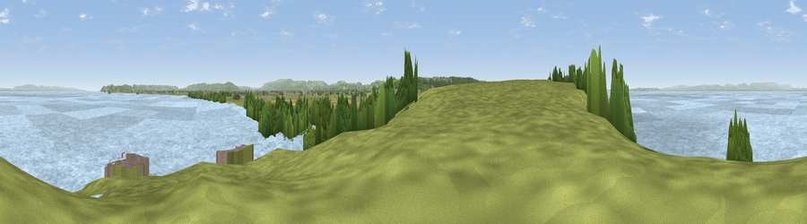

Viewpoint near Worle
#17393 in England · top 39% of its area beats it · near WorleThe view, rendered

A 360° render of this exact spot computed from the terrain model, tree cover and land cover — summer colours, afternoon light, calibrated against photographs of famous viewpoints. Real trees, hedges and buildings will differ in detail.
The panorama
Grey silhouette: terrain skyline in each direction (720 bearings, Earth curvature and refraction included). Dashed green: skyline with trees (+15 m) and buildings (+8 m) as obstacles. Blue strip: how far the ground is visible on each bearing.
Where the view opens
Wedge length = distance to the farthest visible ground on that bearing (vegetation-aware). Rings at 10, 25 and 50 km.
What fills the view
67% water · 24% grassland · 6% woodland · 2% cropland · 1% built-up
Angular shares of the visible panorama (visual magnitude), not map area. Landscape diversity 0.40 (0–1 Shannon).
Key numbers
More beautiful places nearby
The staircase of upgrades: each row has a higher view potential than everything closer. Driving times are estimates from straight-line distance, calibrated against real road routing — check an actual route before setting out.
| Place | Direction | Drive | Score |
|---|---|---|---|
| Viewpoint near Worle | WSW · 1 km | ~2 min | 67.9 |
| Middle Hope | WSW · 2 km | ~6 min | 72.2 |
| Viewpoint near Weston-super-Mare | SW · 5 km | ~12 min | 73.9 |
| Dial Hill | NE · 8 km | ~16 min | 74.9 |
| Viewpoint near Bleadon | S · 9 km | ~18 min | 77.7 |
| Bleadon Hill [Loxton Hill] | SSE · 10 km | ~19 min | 79.6 |
| Viewpoint near East Quantoxhead | SW · 33 km | ~51 min | 83.1 |
| Viewpoint near West Quantoxhead | SW · 33 km | ~51 min | 87.9 |
51.39714, -2.93965 · source: screening · position refined by local search. Computed location — check access rights before visiting.